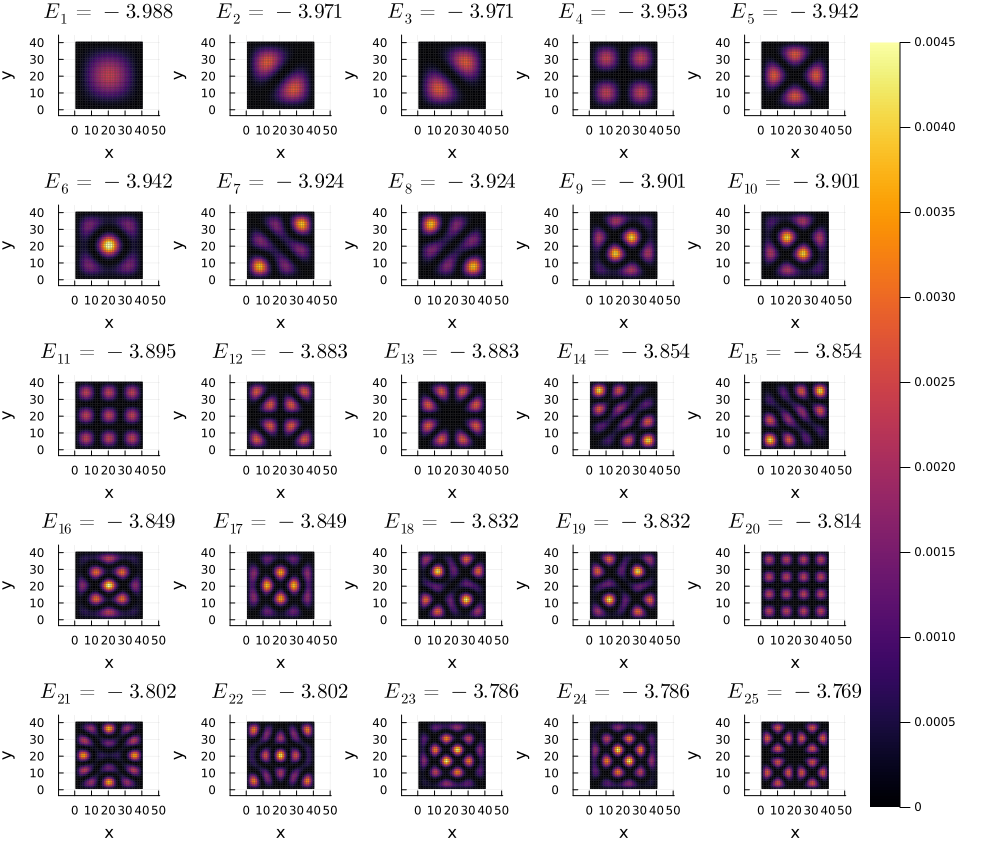

LatticeModels.jl
This package provides a set of tools to simulate different quantum lattice systems.
Installation
Paste the following line into the Julia REPL:
]add https://github.com/aryavorskiy/LatticeModels.jlor
import Pkg; Pkg.add(url="https://github.com/aryavorskiy/LatticeModels.jl")This package has tested compatibility with Julia v1.6. Use with caution on lower versions.
Package features
- Bravais lattices with arbitrary geometry or boundary conditions.
- Powerful operator generation tools.
- Backend-independent computations: linear operators can be of any array type, allowing to use sparse or GPU arrays when needed.
- Manybody computations.
- Smart unitary evolution reducing excessive computations where possible.
- Supports visualization with Plots.jl.
- Compatible with QuantumOptics.jl.
Similar packages
Packages such as Quantica.jl, pybinding and Kwant provide similar functionality. However, they are in general designed for other purposes and lack some features that are present in LatticeModels.jl:
- Schrödinger equation solvers with time-dependent Hamiltonians. Only Kwant provides similar functionality with its
Tkwantmodule, but it lacks the performance and flexibility in some cases. - Convenient tools for setting periodic boundary conditions and gauge fields. The only way to do this in Kwant or Pybinding is to manually set the hopping values.
- A flexible interface for defining new types of lattices and bonds. Random lattices can be implemented on top of
GenericLatticewith ease. - Manybody computations.
LatticeModels.jlcan handle manybody systems with particle interaction.
Overall, while Kwant and pybinding are mostly focused on quantum transport problems and Quantica.jl is designed to find various properties of lattices, LatticeModels.jl focuses on dynamic simulations.
Usage example
This simple code plots local density for lowest energy states of a square tight-binding lattice.
using LatticeModels, Plots
l = SquareLattice(40, 40)
H = tightbinding_hamiltonian(l)
diag = diagonalize(H)
n = 5
clims = (0, 0.0045)
p = plot(layout = @layout[ grid(n, n) a{0.1w}], size=(1000, 850))
for i in 1:n^2
# Plot local density on each subplot
E_rounded = round(diag.values[i], sigdigits=4)
plot!(p[i], localdensity(diag[i]), title="\$E_{$i} = $E_rounded\$", st=:shape,
clims=clims, c=:inferno, cbar=:none, lw=0, framestyle=:none, xlab="", ylab="")
end
# The following lines are kinda hacky; they draw one colorbar for all heatmaps
plot!(p[n^2+1], framestyle=:none)
scatter!([NaN], zcolor=[NaN], clims=clims, leg=:none, cbar=:right, subplot=n^2+2,
framestyle=:none, inset=bbox(0.0, 0.05, 0.95, 0.9), background_subplot=:transparent)
savefig("example.png")
See more examples in the Examples section.